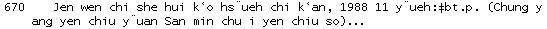

Contact
Princeton University Cataloging Documentation
Contact |
Princeton University Cataloging Documentation |
NACO
Citation of serial sources Return to: NACO main Serial citations--form Author or uniform title main entry |
Special situations: Dates/chronological designationIf an issue has a distinctive chronological designation, cite it by that alone. Use standard abbreviations.
cite as: The verdict, Feb. 1975 In cases where there is no designation date, or only a non-distinctive one (e.g., a quarterly with year designation but no month or season), cite the issue by its numeric designation followed by publication date in parentheses.
Studies in U.S. history, No. 1 (1985) Use vernacular designations, whether numeric or chronological. Capitalize the first letter of a numeric designator, but do not capitalize dates unless the language rules require it. Romanize designations from other alphabets.
For all dates, use the Gregorian equivalent of non-Gregorian years non-Gregorian date: Min kuo 77 nien 11 yüeh |
| ©2008 Princeton University Last Modified 10/08/2007 |